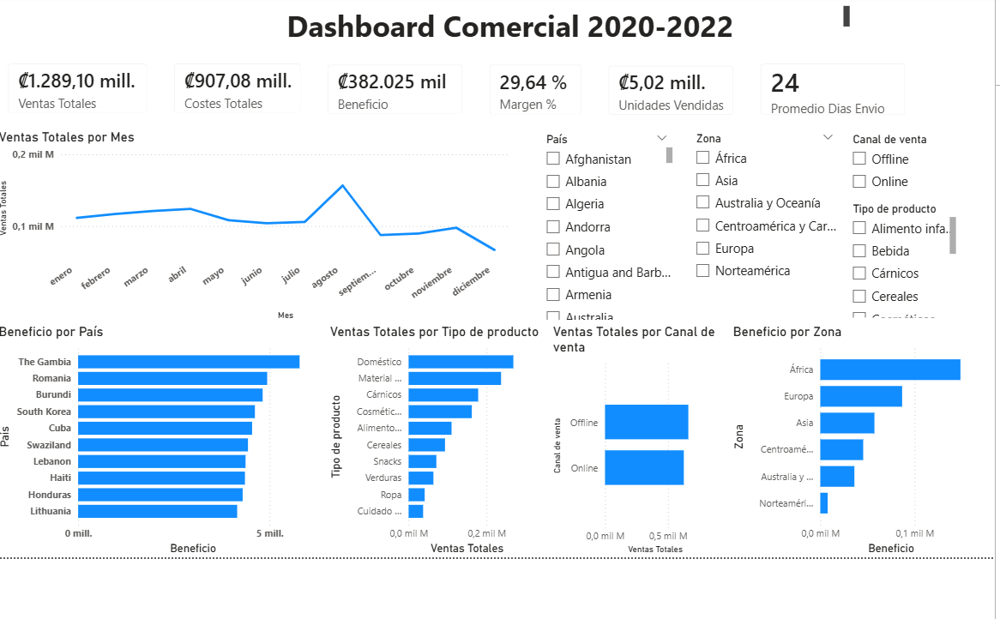

Power BI • DAX • Business Intelligence
Commercial Performance Dashboard 2020–2022
Developed an executive dashboard to analyze revenue, costs, profit, profit margin, units sold, shipping performance, regional profitability, and sales channels across multiple countries and product categories.
Key Metrics
- Total Revenue, Total Costs, Profit, Profit Margin, Units Sold
- Average Shipping Days as an operational KPI
- Top 10 countries by profit and regional profitability
Business Value
This dashboard helps identify which regions, countries, products, and channels contribute the most to profitability, while also providing visibility into operational performance through shipping time analysis.